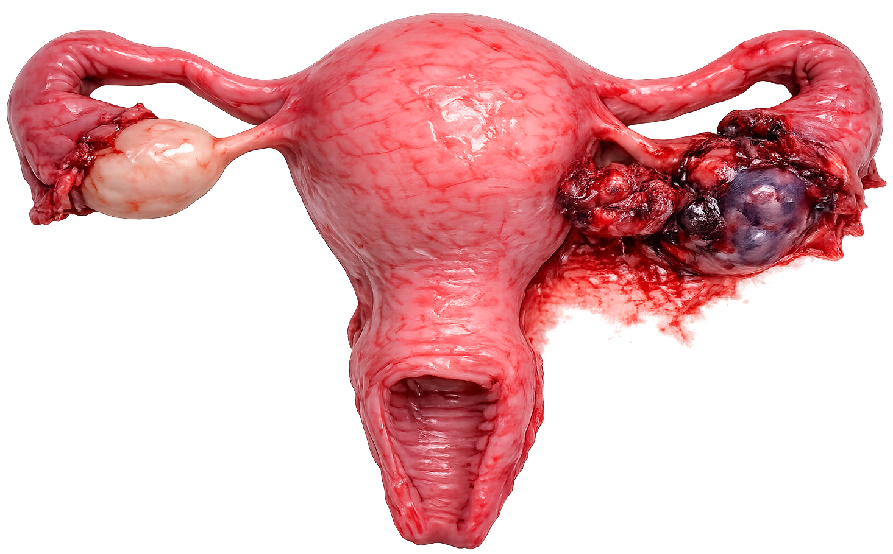

Implantation outside the uterus — obstetric emergency
A fertilized egg implants outside the uterus. Most common site: fallopian tube ampulla (~95%). Cannot sustain normal fetal development → life-threatening rupture if undetected.
| Implantation Site | Frequency | Risk of Rupture |
|---|---|---|
| Fallopian Tube (Ampulla) | ~70% | High — ruptures at 6–10 weeks |
| Fallopian Tube (Isthmus) | ~12% | Very high — ruptures early (smaller tube) |
| Fallopian Tube (Fimbria) | ~11% | Moderate |
| Ovarian | ~3% | Moderate |
| Abdominal/Cervical/Interstitial | <3% | Highest — can lead to massive hemorrhage |

| Risk Factor | Why It Increases Risk |
|---|---|
| Previous ectopic pregnancy | Scarred tube → impaired egg transport; #1 risk factor |
| PID / Salpingitis | Scarring and adhesions in fallopian tubes block normal transport |
| Previous pelvic/tubal surgery | Adhesions → narrowed tube lumen |
| Tubal ligation failure | Damaged tube anatomy → ectopic implantation |
| IUD in place | IUD prevents uterine implantation but not always ectopic |
| Endometriosis | Adhesions alter tubal anatomy |
| Smoking | Impairs tubal motility (cilia movement) |
| Assisted reproductive technology (ART) | Embryo transfer can result in tubal implantation |
| Sign | Details |
|---|---|
| Amenorrhea | Missed period (6–8 weeks); positive pregnancy test |
| Unilateral pelvic/abdominal pain | Dull, crampy or sharp — one sided; worsens as tube distends |
| Vaginal bleeding | Abnormal spotting or light bleeding (NOT normal period flow) |
| Sudden, severe, sharp lower abdominal pain |
| Shoulder pain (Kehr's sign) — referred pain from diaphragm irritation by blood pooling |
| Syncope or near-syncope (hemorrhage → hypotension) |
| Signs of shock: ↓BP, ↑HR, pallor, diaphoresis, cold clammy skin |
| Rigid/board-like abdomen — peritoneal irritation from internal bleeding |
| Cullen's sign — periumbilical bruising (intraabdominal hemorrhage) |
| Test | Finding |
|---|---|
| Urine/Serum β-hCG | Positive (confirms pregnancy); in ectopic, β-hCG rises slower than normal (<66% rise in 48h is suspicious) |
| Transvaginal Ultrasound (TVUS) | No intrauterine gestational sac + adnexal mass = ectopic until proven otherwise; gold standard for diagnosis |
| Culdocentesis | Blood in cul-de-sac via posterior fornix needle → indicates internal bleeding (less used today) |
| CBC | Falling hematocrit with rupture; may be normal early on |
| Scenario | First Action |
|---|---|
| Patient 7 weeks pregnant with sudden sharp one-sided pelvic pain + shoulder pain | Assess VS immediately; call provider — suspect ruptured ectopic; prepare for OR |
| Patient on methotrexate asks if she can take ibuprofen for pain | No — NSAIDs interfere with methotrexate and mask symptoms; give acetaminophen if needed |
| Patient asks when she can try to get pregnant after MTX | Wait at least 3 months after methotrexate (folic acid antagonist can cause birth defects) |
| Rh-negative patient with ectopic pregnancy | Administer RhoGAM (Rho immune globulin) to prevent sensitization |